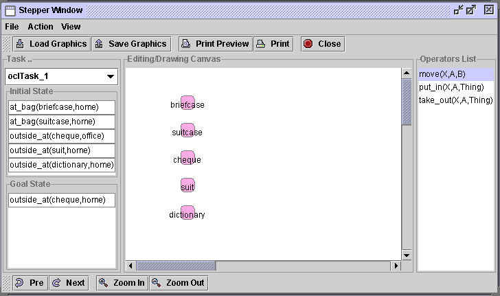
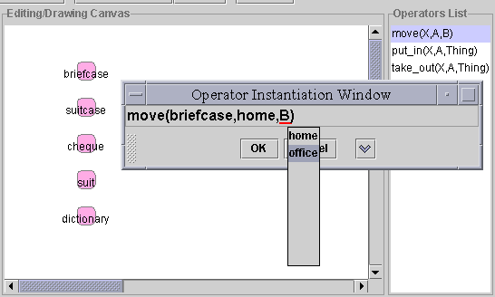
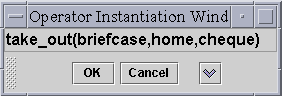
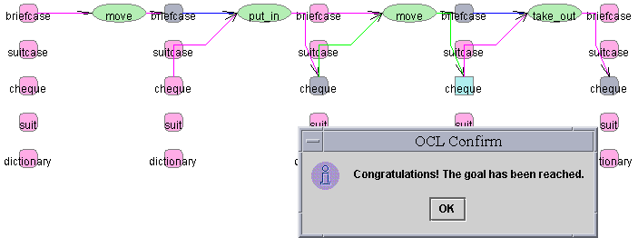
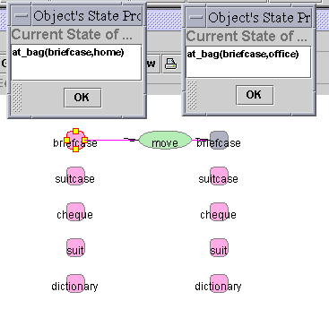

- Click button "Stepper" on the toolbar to bring up the stepper window (Figure 1).
- select task 1 from the task combo box on the left (Figure 2), the content (initial and goal states) of the task will appear. The graphical representation of this task is also shown on the canvas.
- Double click on the operator "move" from the "Operators List" on the right hand side of the window. An operator Instantiation Window will appear (Figure 3). Click on the down arrow will expend the window to show the detail of this operator.
- Right click on the varibles, a popup menu will be actived to allow user to select potential object. An soon as an object is selected, the operator is instantiated simultaneously. Instantiate varibles as shown in Figure 3.
- click on "OK" button to commit. If all necessary conditions and prevail conditions are met, the resulting states after execution of the current operator will be displayed on the canvas. The changed object state will appear in different colour distinguish between prevail condition, necessary change and conditional change.
- repeat step previous steps to instantiate then run operator "put_in" (Figure 4), operator "move" (Figure 5), and operator "take_out" (Figure 6).
- A message should appear to congratulate user that the goal has been reached when the last operator "take_out" has been executed (Figure 7).

- Figure 1 Stepper window
Figure 2 Select a task
- 
Figure 3 Instantiation of operator "move"
- Double click on the object (small round rectangle) "briefcase" in its inital state and second state after execution of the operator "move", the state property will be displayed as shown in Figure 8.

Figure 6 Instantiation of operator "take_out"

- Figure 7 Reached goal state
